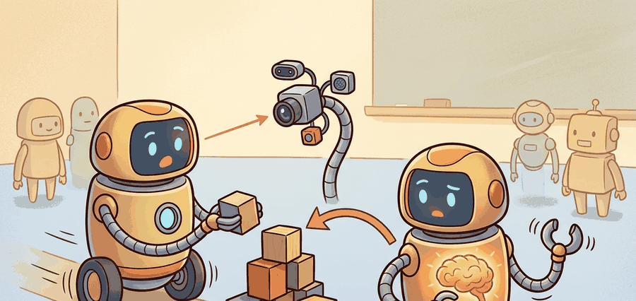

"The robot that never imagines tomorrow keeps negotiating with accidents it could have seen today."
A Horizon-Aware Predictor

Embodied agents need prediction because sensing reports the present while control commits to the near future. If braking, grasp closure, or base motion takes time, the robot must act on where the world is going, not only on where the latest sensor frame says it is now.
The Problem Prediction Solves
The need for prediction appears whenever sensing, computation, and actuation are not instantaneous. A mobile robot entering a blind intersection, a quadrotor compensating for drag, and a manipulator closing a gripper around a moving object all face the same issue: by the time the latest observation is processed, the state that matters has already moved.
That is why embodied control is naturally framed as a partially observable process. The agent rolls its belief state forward with dynamics and then corrects it with the new observation:
$$ b_{t+1}(s') \propto p(o_{t+1}\mid s') \sum_s p(s' \mid s, a_t)\, b_t(s). $$
The observation model says which hidden states could have produced the sensor reading. The transition model says which states were reachable under the chosen action. Prediction enters through the transition term, which lets the agent estimate the future before the next sensor packet arrives.
Prediction is not an ornament around perception. It is the mechanism that turns stale measurements into action-ready state estimates under latency, occlusion, and inertia.
What Counts As Useful Prediction?
A predictive model is useful only if it changes an action variable the robot actually controls: steering angle, thrust command, base velocity, gripper closure, or route choice. High next-frame fidelity can still be useless if it fails to improve collision rate, intervention count, task completion time, or recovery success.
| Question | Good answer | Weak answer |
|---|---|---|
| What is predicted? | Future pose, contact state, or latent task state used by the controller | A generic future image with no control role |
| Over what horizon? | The horizon implied by latency, braking distance, or replanning rate | "A few steps" with no timing contract |
| How is it evaluated? | Closed-loop success, safety, intervention, or regret on a matched panel | Standalone MSE with no action consequence |
Worked Example: Predictive Braking
Code Fragment 1 below shows the smallest possible example of why prediction changes control. The reactive controller brakes only after the obstacle enters its current rule set. The predictive controller checks the next step before committing the current action.
# Compare a reactive brake rule with a one-step predictive brake rule.
# Both controllers see the same state, but only one simulates the next position
# before deciding whether the current velocity is still safe.
dt = 0.2
obstacle = 1.0
reactive_x, reactive_v = 0.0, 0.8
reactive_positions = []
for _ in range(5):
if obstacle - reactive_x < 0.2:
reactive_v = 0.0
reactive_x += reactive_v * dt
reactive_positions.append(round(reactive_x, 2))
predictive_x, predictive_v = 0.0, 0.8
predictive_positions = []
for _ in range(5):
predicted_next = predictive_x + predictive_v * dt
if obstacle - predicted_next < 0.2:
predictive_v = 0.0
predictive_x += predictive_v * dt
predictive_positions.append(round(predictive_x, 2))
print(
{
"reactive_positions": reactive_positions,
"predictive_positions": predictive_positions,
}
){'reactive_positions': [0.16, 0.32, 0.48, 0.64, 0.8], 'predictive_positions': [0.16, 0.32, 0.48, 0.64, 0.64]}
The expected pattern is that the predictive controller stops one step earlier and preserves margin, even though both controllers use the same raw observation.
predicted_next check, yet that change preserves a safety margin the reactive rule gives away.The hand-built probe takes about 20 lines so every assumption stays visible. In practice, the same delayed-control benchmark fits in a few lines with Gymnasium, while MuJoCo handles contact and latency-sensitive physics that the toy probe intentionally ignores.
Choose the prediction target by asking which variable the controller would act on if it were known one step earlier. If the answer is "none", the predictive model is probably solving the wrong problem.
Do not justify a predictive model with open-loop image quality alone. In embodied systems, a slightly blurrier forecast that preserves stopping distance or contact timing is often more valuable than a visually sharp forecast that fails to change the controller's decision.
Predictive models accumulate error over multi-step rollouts: a small per-step inaccuracy compounds so that a 10-step imagined trajectory can diverge sharply from reality. DreamerV3, for instance, limits imagination rollouts to 15 steps and trains the value function on these bounded horizons precisely because longer rollouts degrade too fast to be useful for planning. When the prediction horizon exceeds the model's reliable range, the agent is effectively planning against a hallucinated world, which can produce overconfident actions that fail on contact with reality.
A warehouse base entering a blind aisle does not need a photorealistic movie of the next second. It needs a reliable estimate of future free space and stopping distance quickly enough to select a safer command before committing wheel torque.
This section connects the agent-environment formalism in Chapter 2, the state-estimation view in Chapter 29, and the learned-planning machinery in Chapter 37.
Current world-model research is shifting from "can we reconstruct the future?" to "does the predicted future improve control?" DreamerV3 made imagination-based control a strong general baseline, Dreamer 4 extends scalable simulated training, and recent latent-state work asks what information a world model must preserve for planning rather than for visual fidelity alone.
For a robot you know well, name one delayed consequence that makes purely reactive control weak. What variable should be predicted, over what horizon, and which closed-loop metric would prove the prediction helped?
Prediction is the robot equivalent of looking around the corner before your momentum turns the corner for you.
Agents need prediction whenever the state that matters for action evolves faster than sensing, computation, and actuation can close the loop.
Pick an embodied task with delay or occlusion. Write the hidden state, the prediction horizon, the action variable it changes, and one matched closed-loop metric that would justify adding a predictive model.
Bibliography & Further Reading
Primary References And Tools
Ha, D., and Schmidhuber, J.. "World Models." (2018). https://worldmodels.github.io/
A compact foundation for learning a compressed latent dynamics model and using it for control. Read it for the basic separation between representation, dynamics, and controller before moving to larger agents.
Hafner, D. et al.. "Learning Latent Dynamics for Planning from Pixels." (2019). https://arxiv.org/abs/1811.04551
PlaNet is a core reference for planning from learned latent dynamics. It is especially useful for understanding why prediction in state space can be more action-relevant than pixel reconstruction alone.
Hafner, D. et al.. "Mastering Diverse Domains through World Models." (2023). https://arxiv.org/abs/2301.04104
DreamerV3 shows a general world-model agent operating across many domains with one configuration. It gives readers a concrete benchmark for connecting future prediction to policy improvement.
"Training Agents Inside of Scalable World Models." (2025). https://arxiv.org/abs/2509.24527
A recent Dreamer-line result that emphasizes accurate, scalable world models as training environments rather than as pure prediction benchmarks.
Farama Foundation. "Gymnasium Documentation." (2026). https://gymnasium.farama.org/
Gymnasium supplies the environment interface used by small prediction and control labs. It keeps reset, step, termination, and seeding semantics explicit, which is essential for fair horizon comparisons.